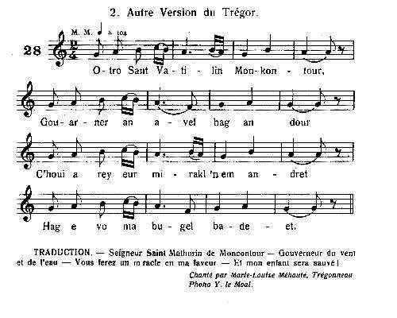
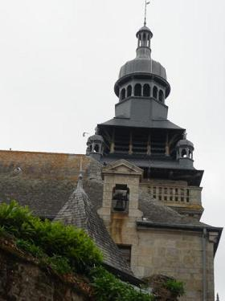
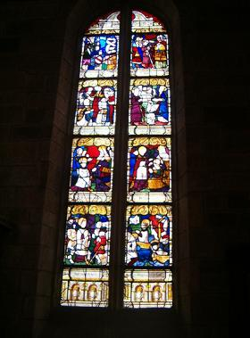
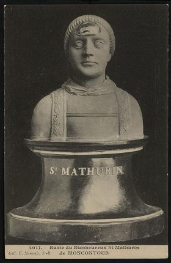
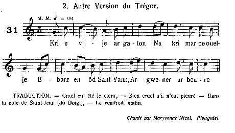
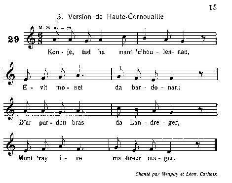

Porzh-Kotour - Katellig An Troadek
Saint Jean de Port-Contour - Catherine Le Troadec
Saint John of Port-Contour - Kate Le Troadec
2 versions d'un même chant collectées par Théodore Hersart de La Villemarqué
dans le 1er Carnet de Keransquer (pp. 119-120 et 183-184).
dans le 1er Carnet de Keransquer (pp. 119-120 et 183-184).

Mélodie 1
Arrangement Christian Souchon (c) 2014
|
Tirée de "Musiques Bretonnes" de Maurice Duhamel, Paris 1913. N° 28 "Sant Vatilin Monkontour", Version du Trégor, chantée par Marie-Louise Méhouté de Trégonneau. |
Published in "Musiques Bretonnes" by Maurice Duhamel, Paris 1913. N°28 "Sant Vatilin Monkontour", Trégor tune sung by Marie-Louise Méhouté from Trégonneau. |
1° PORZH-KOTOUR
Saint Jean de Portcontour - Saint John of Port-Contour
Collecté par La Villemarqué, 1er Carnet de Keransquer pp. 119 et 120
|
BREZHONEK SANT YANN PORZH-KOTOUR p. 119 I Plac'h 1. - Va zad, va mamm, roit konje din Da vont war pardon da Landreger, Asamblez gant va breur mager Nag ha tud yaouank ar c'harter. Tad 2. - D'ar pardon braz na deufet ket Pa 'ma an avel diwar ar Yaodet... - II 3. Ur maleur braz zo c'hoarvezet Ha leizh a dud a zo beuzet, Ha leizh a dud, a dud vailhant Hag a oa 'barzh seizh den ha kant, Heb anaon ha sakramant. 4. Ar muiañ truez emaout eo Ur wregig yaouank oa gante. Ur wregig yaounk deus ar c'hanton Oa o dougañ he bugel kentañ. 5. Honnezh savez doc'h an dour Da c'halvañ Jezuz d'he sikour. Honnezh savez doc'h an dour Da c'halvañ Jezuz d'he sikour. Plac'h 6. - Hon Aotroù Zant Yann Porzh-Kotour, Gouarnamañt d'an avel hag an dour, Paz oc'h war an dour gouarnamañt, O, gouarnet din va inosañt, Ha ma teuy da resev badeziant! - p. 120 7. Ne oa ket he komz peurlaret Sant Yann d'e hent, pa oa rentet! Ne oa ket he komz peurlaret Sant Yann d'e hent, pa oa rentet! III 8. Ur bugel bihan he-deus ganet, Ur bugel deus ar c'haerañ, Hag en e genoù, bezhin glas A ziskuilh 'ma zeuet diwar ar mor bras! Plac'h 9. - Me royo d'ar werc'hez Vari, Ar c'haerañ buoc'h laezh zo em zi. Ha royo dezhi ur gouriz koar 'daleg an aoter vras beteg an nor zal, 10. 'dalek beg an tour beteg an douar, A ray teir dro d'ar grusifi Peder dro da skeudenn Mari. 11. Mont her saludiñ n'hellan ket Kar toud an dorioù zo serret. - III 12. Oa ket he c'homz peurlavaret, Toud an norioù oa dibrennet, Ha kleier e-barzh da zon zo aet, An dud 13. - Petra zo nevez e Borzh-Kotour Pa zon ar c'hleier 'barzh an tour? Petra zo a-nevez er bourc'h Pa zo kloc'h an tour en e bouez? [...] |
TRADUCTION FRANCAISE SAINT JEAN DE PORT-CONTOUR p. 119 I La jeune femme 1. - Mon père, ma mère laissez-moi Aller au pardon de Tréguier, Accompagné de mon frère de lait Et de jeunes gens du quartier. Père 2. - Au grand pardon vous n'irez point Le vent souffle du côté du Yaudet... - II 3. Un grand malheur est arrivé Et plein de gens se sont noyés, Oui pleins de gens, de gens vaillants A bord d'un bateau, sept et cent, Sans extrême-onction, ni sacrement. 4. Celle qui fait le plus pitié C'est une jeune femme parmi eux. Une jeune femme du canton Qui attendait son premier enfant. 5. Elle remonta à la surface de l'eau Pour appeler Jésus à son secours. Elle remonta à la surface de l'eau Pour appeler Jésus à son secours. La jeune femme 6. - Monsieur Saint-Jean de Portcontour, Vous qui commandez au vent et aux flots, Vous qui commandez aux flots, Prenez soin de mon enfant innocent, Qu'il vienne à recevoir le baptême! - p. 120 7. Elle n'avait pas fini de parler Que Saint-Jean s'est mis en route! Elle n'avait pas fini de parler Que Saint-Jean s'est mis en route! III 8. Elle mit au monde un petit enfant, Le plus bel enfant qui soit: Dans sa bouche du goémon vert Révèle qu'il est né dans l'océan! La jeune femme 9. - Je donnerai à la Vierge Marie, La plus belle vache à lait de ma ferme. Et je lui donnerai un cordon de cire Allant de l'autel jusqu'au porche, 10. Et du haut du clocher jusqu'au sol, En faisant trois fois le tour du crucifix Et quatre fois celui de la statue de Marie. 11. Aller la saluer je ne puis Car toutes les portes sont fermées. - III 12. Elle n'avait pas dit ces mots, Que toutes les portes se sont ouvertes, Et que les cloches dans l'église se sont mises à sonner, Les gens 13. - Quoi de neuf à Port-Contour? Pourquoi les cloches sonnent-elles dans la tour? Quoi de neuf au bourg Pourquoi la cloche de la tour est-elle en branle? [...] |
ENGLISH TRANSLATION SAINT JOHN OF PORT-CONTOUR p. 119 I Girl 1. - Father, Mother, allow me To go to the Tréguier "pardon", Along with my foster-brother And other young people of the district. Father 2. - To the great "pardon" you shall not go Since the wind blows towards Le Yaudet... - II 3. A catastrophe happened And lots of people were drowned, Lots of people, of brave people A hundred and seven people who died, Without extreme-unction and sacrament. 4. The one you shall most pity Is a girl who was among them, A girl from the district Who was pregnant with her first child. 5. She rose to the surface To call Jesus for help. She rose to the surface To call Jesus for help: Girl 6. - Our Lord Saint-John of Port-Contour, You hold sway over wind and water. Since you hold sway over water, Extend your mercy to my innocent child, That it may receive baptism! - p. 120 7. Her speech was not finished, When Saint John rose and repaired to her! Her speech was not finished, When Saint John rose and repaired to her! III 8. To a little child she gave birth, A most lovely child, With green wrack in its mouth Hinting at the ocean whence it came! Girl 9. - I shall give the Blessed Virgin, The fairest cow in my cowshed. I shall give her a cord of wax reaching From the altar to the porch gate! - 10. And from the steeple to the ground; Turning thrice around the cross And four times around Mary's statue. 11. But go and greet her I cannot Since all the doors are shut. - III 12. Her speech was not yet finished, When all doors were unlocked, And the bells started ringing, People 13. - What's news in Port-Contour? Why do they ring the bells in the tower? What's news in our town Causing them to swing the bells? [...] |
NOTES:
|
Bibliographie: Manuscrits: - Coll. Penguern, t.89: Gwerz San Yan (Henvic, 1851) (= Gwerin 5); t.91: Pardon Landreguer (= Al liamm 34, 1952); t.95, 301: Ar vag kollet t. III, 157, 188: Sant Matelin - Le naufrage. t. 112, 93: Bak kollet. - Luzel: Nouvelles acquisitions françaises, 3342, 499: Saint-Mathurin de Moncontour. Recueils: - Luzel, Gwerzioù tome 1: Sant Matelinn Moncontour (Plouaret, 1847); Matelina Troadec (Guerrand, 1863). - Bourgeois, Kanaouennoù pobl: Pardon braz Landreger (Pontrieux, 1890). Périodiques: - Besco, Annales de Bretagne XLV, (1938): Catherin Troadec (Lanrivai, 1920); - Guillerm, Annales de Bretagne XLVI, (1939): Ar peñse (Tregunc). - Milin, Gwerin 3: Pardon Sant Yann ar Biz. La noyée et son enfant Les versions de cette gwerz collectées par La Villemarqué l'ont vraisemblablement été en Cornouaille, comme la plupart des chants du Barzhaz de 1839. C'est sans doute ce qui fait qu'elles soulèvent quelques questions sans réponse: Le second chant nomme l'héroïne, Catherine Le Troadec. On apprend qu'elle a l'habitude des voyages en mer et c'est pourquoi, malgré ses réticences, son père la charge, de préférence à ses surs, de se rendre quelque part en bateau accomplir une mission qui n'est pas précisée. Il n'est dit nulle part qu'elle attend un enfant. Le sanctuaire dont elle invoque la protection est celui du Folgoët (à 20 km au NE de Brest), lieu vers lequel elle est miraculeusement transportée. Son père l'accompagne pour l'accomplissement de ses promesses votives. Peut-être est-ce là que Catherine habite. La version collectée par de Penguern Cette version nous ramène du Léon vers le Trégor. L'héroïne s'appelle Matelina (Mathurine) puisque Saint Mathurin est son saint patron (strophe 8). L'histoire commence comme dans la version 1 de La Villemarqué: Matelina demande à ses parents d'aller au pardon de Tréguier. Le bateau où elle embarque chargé de cent sept personnes chavire au large du Yaudet. Elle invoque la protection de son saint patron pour son enfant qui a pris la mer sans être baptisé (strophe 12). En échange, elle promet, là encore, un long cordon de cire. Il y est dit clairement que la mère et l'enfant sont noyés et on s'apprête à les enterrer à Saint-Jean où la mer a rejeté les cadavres sur la grève (strophe 13). La seule localité côtière à l'ouest et proche du Yaudet placée sous l'invocation de ce saint est Saint-Jean-du-Doigt. Les deux versions de Luzel Luzel donne dans ses "Gwerzioù Breiz Izel", tome 1, deux chants apparentés à ceux notés par la Villemarqué: Contrairement aux versions précédentes, celle-ci indique clairement que la mère et l'enfant sont transportés vivants et miraculeusement sur la grève de Saint-Jean (du-Doigt, précise Luzel dans une note). La jeune femme décide de faire un pèlerinage d'action de grâce à Saint Mathurin de Moncontour, où comme dans la version 1 de La Villemarqué se produit le miracle des portes et des cloches. Elle entre dans l'église au milieu d'une procession et là son cur se brise: "Elle est ensevelie et mise au tombeau/Et la bénédiction de Dieu soit sur son âme!" (Setu hi liennet, lakaet 'n he bez / Bennoz Doue war he ene!). Quand le bateau chavire, elle a la vision de sa mère en train de couper des choux et elle prie pour que celle qui l'a envoyée à la mort subisse le même sort. Elle prie également Saint Mathurin de Moncontour de sauver son fils de la noyade. Ce dernier aborde effectivement sur la grève de Saint-Jean, portant une robe de satin blanc, signe qu'il était le fils d'un marquis. Sa mère fut retrouvée à dix-huit brasses au fond de la mer, tenant à la main une branche de goémon vert "rekour he buhez felle dezhi c'hoazh" ([qu'elle avait saisie] en voulant encore recouvrer la vie). Luzel avait recueilli ce chant de la bouche d'une fileuse de [Plouégat-] Guérand, à 12 km au sud de Saint-Jean. Luzel suggère que cette aventure serait à ajouter à la liste déjà longue des méfaits commis par le fameux Marquis de Locmaria (Guérand). Saint Mathurin de Moncontour et Saint Jean du Doigt L'épisode de Lérins fit de lui également le saint patron des marins. C'est à ce titre, outre ses talents neurologiques, qu'il est honoré en Bretagne où une église est placée sous son invocation à Moncontour. Un vitrail y raconte les principaux événements de sa vie et un reliquaire d'argent représentant son buste contient un petit fragment de son front. On le porte en procession tous les ans lors du Pardon de Pentecôte qui est célébré aujourd'hui encore. La gwerz cornouaillaise, version 1, fait un amalgame de cette localité avec Saint-Mathurin-de-Moncontour et parle d'un "Saint-Jean de Port-Contour" qu'on chercherait en vain sur une carte! La version 2, quant à elle, localise l'intrigue au Folgoët, comme on l'a vu. Il s'agit aussi d'un important lieu de pèlerinage. On peut rapprocher ces pièces des chants de naufrage publiés par le Chanoine Pérennès: - Ar vag kollet (le bateau naufragé) - Ar peñse (le naufrage), dont près de la moitié des couplets se retrouvent dans la version 2 de La Villemarqué. On trouvera à cette page quelques explications complémentaires. |
 Clocher de St-Mathurin de Moncontour  Vitrail de St-Mathurin de Moncontour (1520) Le tableau en bas à droite montre comment le saint apaisa la tempête et aborda à l'île de Lérins: Au 1er plan, la mer et ses poissons; A droite, le Saint dort dans une barque; Au centre, le Saint en prière; A gauche, le saint reçu par les moines.  Reliquaire de St-Mathurin de Moncontour |
Bibliography: Manuscripts: - Coll. Penguern, t.89: Gwerz San Yan (Henvic, 1851) (= Gwerin 5); t.91: Pardon Landreguer (= Al liamm 34, 1952); t.95, 301: Ar vag kollet t. III, 157, 188: Sant Matelin - Le naufrage. t. 112, 93: Bak kollet. - Luzel: Nouvelles acquisitions françaises, 3342, 499: Saint-Mathurin de Moncontour. Collections: - Luzel, Gwerzioù tome 1: Sant Matelinn Moncontour (Plouaret, 1847); Matelina Troadec (Guerrand, 1863). - Bourgeois, Kanaouennoù pobl: Pardon braz Landreger (Pontrieux, 1890). Périodiques: - Besco, Annales de Bretagne XLV, (1938): Catherin Troadec (Lanrivai, 1920); - Guillerm, Annales de Bretagne XLVI, (1939): Ar peñse (Tregunc). - Milin, Gwerin 3: Pardon Sant Yann ar Biz. The drowned girl and her child The versions of this ballad collected by La Villemarqué are very likely from Cornouaille, like most songs in the 1839 edition of the Barzhaz. It should be the reason why there are some questions left unanswered about them: In the second song, the heroine is named Catherine Le Troadec. She is apparently long used to sea voyages. That is why, despite her reluctance, her father orders her, rather than her sisters, to go somewhere by ship on an unknown errand. That she is pregnant is not mentioned in this version. The place of worship whose protection she calls on herself is Le Folgoët pilgrimage church (20 km north-east of Brest), a place whither she is miraculously "beamed". Her father assists her in the fulfilment of her votive promises. Maybe she lives in Folgoët. Version collected by de Penguern This version takes us back from Léon (Brest area) to Trégor (Tréguier area). The heroine is named Matelina (Mathurina) since Saint Mathurin is her patron saint (as stated in stanza 8). The narrative begins like in La Villemarqué's version 1: Matelina asks her parents for permission to go to the Tréguier "Pardon". The ship on which she embarks is loaded with a hundred and seven people and it capsizes off the coast of Le Yaudet. She calls her patron saint for protection on behalf of her child born in the sea without being baptized (stanza 12). Here again, she promises, in exchange, a long wax cord. The lyrics clearly state that mother and child were drowned and will be presently buried at Saint-John town where the tide has cast up the corpses (stanza 13). The only coastal town in the western vicinity of Yaudet, placed under the invocation of this saint is Saint-Jean-du-Doigt (literally "Saint-John- of-the-Finger"). The two versions collected by Luzel In his "Gwerzioù Breiz Izel", Book 1, Luzel publishes two songs related to those recorded by la Villemarqué: Unlike the foregoing versions, this one clearly states that mother and child are transported alive onto the shore of Saint-Jean (du-Doigt, as added by Luzel in a footnote). The girl decides to go on pilgrimage, to reward the saint, to Saint-Mathurin-de-Moncontour, where, as in La Villemarqué's version 1, the miracle of the doors and of the bells happens. Now she enters the church amidst a procession and there her heart stops beating: "There she is buried and entombed/ God bless her soul!" (Setu hi liennet, lakaet 'n he bez / Bennoz Doue war he ene!). When the boat capsizes, she has a vision of her mother cutting cabbages and she prays to God He may cause her who sent her to death to share her tragic fate. She also prays to Saint Mathurin of Moncontour he may prevent her son from drowning. The latter really is swept, unscathed, on the shore of Saint-Jean, clad in a white satin dress, a token that he is the son of a marquis. His mother was found, eighteen fathoms deep in the sea, holding a bunch of green wrack "rekour he buhez felle dezhi c'hoazh" ([she had grasped] in the hope to keep alive). Luzel had gathered this song from the singing of a weaver woman of [Plouégat-] Guérand, twelve kilometres south of Saint-Jean. Luzel suggests that this story ought to be added on the already long lists of wrongdoings committed by the nepharious Marquis of Locmaria (Guérand). Saint Mathurin of Moncontour and Saint Jean du Doigt The Lérins episode also made of him the patron saint of sailors. In this quality, in addition to his neurological achievements, he has a church dedicated to him in the Breton town Moncontour. The church has a stained glass window depicting the main episodes of his life. It also harbours a silver shrine in form of a bust in which a small fragment of his forehead bone is embedded. It is carried in procession on the day of the annual "Pardon" that takes place at Pentecost up to the present day. The Cornouaille gwerz, version 1, makes a sort of hotchpotch, mixing up this name with that of Saint-Mathurin-de-Moncontour: one would search in vain for "Saint-Jean de Port-Contour" on a land map! Version 2 locates the plot in Le Folgoët, as already stated. Also a prominent place of pilgrimage it is worthwhile comparing these ballads with the shipwreck songs published by Canon Pérennès: - Ar vag kollet (The wrecked ship) - Ar peñse (The shipwreck), nearly half of the stanzas of which will be found in La Villemarqué's version 2. This page provides additional information. |
2° KATELLIK AN TROADEC
Catherine Le Troadec
Cahier de Keransquer N° 1, pages 183.2 et 184

Mélodie 2
|
Version trégoroise tirée de "Musiques bretonnes" de Maurice Duhamel, Paris 1913, p.16: N° 31 "Matelina Troadec" (chanté par Maryvonne Nicol, de Plouguiel(22). |
Trégor version published in "Musiques bretonnes" by Maurice Duhamel, Paris 1913, p.16: N° 31 "Matelina Troadec" (sung by Maryvonne Nicol, from Plouguiel(22). |
|
BREZHONEK KATELLIK AN TROADEG p. 183.2 I 1. Katellig An Troadek a lare D'he zadik paour un deiz a oe: 2. - Va zadig paour mar am c'harit, War ar mor bras n'em c'hasit ket! 3. Ha kasit-c'hwi va c'hoar Ana, Pe va c'hoarig vihan Franseza. 4. - C'hwi an hini a zo boazet, C'hwi, va merc'hik, ranko moned. - II 5. Katellig An Troadek zo beuzet, Barzh ar mor braz, tregont goured, Ha kemend-all a ledaned. III 6. An Troadek koz a lavare, O troc'hañ o bara d'e vugale: 7. - Me garfe re all-toud 'kreiz ar stêr, Va merc'h Katell ganin er ger, 8. Me garfe re all-toud 'kreiz ar mor, Va merc'h Katellik 'toull va dor. 9. - Va zadig paour, pec'hiñ a rit: An dour er mor zo benniget, Ar sterioù red, re-ze, n'int ket... - IV 10. Katellikg An Troadek a lare War ar mor bras pa ziskenne: 11. - Mar gellan sevel war ma daoudroad, Ma ' gaso ur prezant d'ar Folgoat. 12. Me gaso ur prezant d'ar Folgoat. Ha kroaz ha banniel war e droiad, 13. Hag ur c'halis kaer bleuñv-rochedet Hag ur groaz arc'hant alaouret, 14. Ha gwiskamant da deir aoter Hag offerenn warne bep Gwener. - p. 184 15. Ne oa ket he c'homz peurlaret, Tachenn ar Folgoat pa oa rentet... 16. An Troadek koz a lavare D'ar bedell Folgoat pa hi gwele: 17. - Digorit frank dor ar porched: Erru va merc'h Katell d'ho kweled. - |
FRANCAIS CATHERINE LE TROADEC p. 183.2 I 1. Catherine Le Troadec disait A son pauvre père un beau jour: 2. - Mon père si vous m'aimez, Vous ne m'enverrez pas sur l'océan! 3. Vous y enverrez ma sur Anne, Ou ma petite sur Françoise. 4. - Vous êtes celle qui avez l'habitude, C'est à vous ma fille d'y aller. - II 5. Catherine Le Troadec s'est noyée, A trente brasses dans l'océan, Et à une distance égale [de la côte?]. III 6. Le vieux Le Troadec disait, En coupant le pain pour ses enfants: 7. - J'aimerais que vous soyez tous au fond de la rivière, Et que ma fille Catherine soit chez nous, près de moi, 8. J'aimerais que vous soyez tous au fond de la rivière, Et que ma fille Catherine soit chez nous, près de moi, 9. - Mon pauvre père ce que vous dites est péché: L'eau de la mer est bénite, Celle des eaux courantes ne l'est point... - IV 10. Catherine Le Troadec disait En descendant au fond de l'océan: 11. - Si jamais je recouvre l'usage de mes jambes, J'irai porter un ex-voto au Folgoët. 12. J'iari porter un ex-voto au Folgoët: Une croix et une bannière avec sa hampe, 13. Et un calice avec un beau couvre-calice à fleurs Et une croix d'argent doré, 14. Et des nappes pour les trois autels Où l'on dira la messe tous les vendredis. - p. 184 15. Elle n'avait pas fini de parler, Qu'elle était transportée au Folgoët... 16. Le vieux Le Troadec disait Au bedeau du Folgoët en la voyant: 17. - Ouvrez grand la porte du porche: Voici ma fille Catherine qui vient vous voir. - |
ENGLISH KATE LE TROADEC p. 183.2 I 1. Kate Le Troadec did say To her poor father, on a certain day: 2. - My dear father, if you love me, You shall not send me out on the ocean! 3. Send my sister Anne instead, Or my little sister Frances. 4. - You are the one who's used to it, Therefore, my girl, it must be you. - II 5. Kate Le Troadec sank Thirty fathoms deep in the ocean, And the same distance away from the shore. III 6. Old Le Troadec did say As he shared bread to his children: 7. - I wish you were all drowned in the brook, And my daughter Kate in this house, 8. I wish you were all drowned in the sea, And my daughter Kate were standing on my threshold. 9. - Father, if you say so, you sin: Sea water is holy water, But stream water is not... - IV 10. Kate Le Troadec did say As she was sinking in the ocean: 11. - If ever I am to stand again on my feet I'll send a present to Le Folgoët sanctuary. 12. I'll send a present to Le Folgoët: A cross and a banner with its pole, 13. And a chalice with embroidered veil And a gilded silver cross, 14. And clothes for all three altars Where mass will be said every Friday. - p. 184 15. But her speech was not finished, When she found herself in the precinct of Folgoët church... 16. Old Le Troadec said To the beadle of Folgoët church when he saw her: 17. - Open wide the porch way door: Here is my daughter Kate coming to see you. - |
3° PARDON LANDREGER
Le Pardon de Tréguier
Version collected by De Penguern
Tome 91 des manuscrits. Page 325 du recueil Dastumad

Mélodie 3
|
Version de Haute Cornouaille tirée de "Musiques bretonnes" de Maurice Duhamel, Paris 1913, p.15: N° 29 "Sant Vatilin Monkontour" (chanté par Menguy et Léon, de Carhaix (29). |
Upper Cornouaille version published in "Musiques bretonnes" by Maurice Duhamel, Paris 1913, p.15: N° 29 "Sant Vatilin Monkontour" (sung by Menguy and Léon, from Carhaix (29). |
|
BREZHONEK I 1. - Konje, tad ha mamm, a c'houlenan Hag evit moned da bardonañ. 2. D'ar pardon bras, da Langreger Ez a holl dud yaouank ar c'harter. 3. - D'ar pardon bras c'hwi ned eot ket: Troet eo an avel er Yaodet. - II 4. Ur maleur bennag zo erruet Ur vagad tud a zo beuzet. 5. Ur vagad tud ha tud yaouank, Bet e oa enni ur seizh ha kant. 6. Muiañ a truez am-boa oc'h enni Voa oc'h ur c'hwreg yaouank a oa enni. 7. Dre ma ye ar vag war he c'hostez, Ar c'hwreg-mañ a pede Doue: 8. - Aotroù Sant Matelin, va faeron, Grit ur mirakl bennak evidon. 9. Me a royo deoc'h un donezon A vezo brav deiz ho pardon. 10. Me a royo dezhoch ur c'houriz koar, Hag a rayo an dro d'hoc'h holl douar. 11. Hag a rayo an dro d'hoc'h holl douar. Adalek an aoter beteg an nor-dal. 12. Prezervit din va inosañt, A zo goloet er mor hep badeziant. - III 13. Kriz a vije ar galon na ouelje, En aot Sant Yann, neb a vije, 14. O weled ar mor bras o verviñ Gant gwad ar Gristenien o veuziñ. 15. Kriz a vije ar galon na ouelje En aot Sant Yann, neb a vije, 16. O weled ar bugel hag e vamm O vont da interiñ da Zant Yann. 17. En e zorn gantañ ur bod bezhin glas, Da ziskuliañ e voa kavet er mor bras. 18. Hag un all war poull e galon, Da ziskuliañ e voa ganet er mor don. |
FRANCAIS I 1. - Mon père, ma mère, je vous demande la permission D'aller en pèlerinage au pardon. 2. Au grand pardon de Tréguier: Y vont tous les jeunes gens du quartier. 3. - Au grand pardon vous n'irez pas: Le vent a tourné en direction du Yaudet. - II 4. Encore une catastrophe: Un bateau de passagers a chaviré. 5. Plein de monde à son bord: des jeunes gens, Au nombre de cent et sept. 6. Celle qui m'a fait le plus pitié C'est une jeune femme à bord de ce bateau. 7. Alors que le bateau donnait de la gite, Cette femme priait Dieu: 8. - Saint Mathurin, mon saint patron, Faites pour moi un miracle. 9. Je vous ferai une donation Qui embellira le jour de votre pardon. 10. Je vous donnerai un cordon de cire, Qui fera le tour de tout votre enclos. 11. Qui fera le tour de tout votre enclos, Puis ira de l'autel jusqu'au porche. 12. Préservez mon enfant innocent Que la mer a recouvert sans qu'il soit baptisé. - III 13. Cruel le cur qui n'eût pleuré, Sur la grève de Saint-Jean, 14. En voyant l'océan briller Du sang des chrétiens qui se noyaient. 15. Cruel le cur qui n'eût pleuré, Sur la grève de Saint-Jean, 16. En voyant l'enfant et sa mère Qu'on allait enterrer à Saint-Jean. 17. Dans la main de l'enfant une touffe de goémon vert, Pour signifier qu'on l'avait trouvé dans l'océan. 18. Et une autre au creux de son cur, Pour signifier qu'il était né dans la mer profonde. |
ENGLISH I 1. - Father, mother, give me permission To go to the "Pardon" fair. 2. To Tréguier great "Pardon" fair With all young people of the district. 3. - To the great "Pardon" you shall not go: The wind blows toward Le Yaudet. - II 4. A catastrophe happened: A boat with many people aboard capsized. 5. A boat with young people aboard, With a hundred and seven people aboard. 6. The one you shall most pity Is a young girl who was among them. 7. When the boat was still listing, This girl said a prayer: 8. - Lord Saint Mathurin, my patron saint, make some miracle in my favour. 9. And I shall make a donation To embellish your "Pardon" day. 10. I shall give you a cord of wax, Surrounding the whole of your precinct. 11. Surrounding your precinct And reaching from altar to church door. 12. Preserve my innocent child, That the sea engulfed and it was not christened. - III 13. Cruel-hearted had been whoever, Was on the shore of Saint-John town, 14. And had not cried on seeing the sea Reddened with the drowned Christians' blood. 15. Cruel-hearted had been whoever, Was on the shore of Saint-John town, 16. And not cried, seeing child and mother Being buried in Saint-John churchyard. 17. In the child's hand a bunch of wrack, Since it had been recovered in the sea. 18. And another upon his breast: Hinting at its birth in the depths of the sea. |
Ar vag kollet de l'Abbé Pérennès
Ar peñse de l'Abbé Pérennès
"Ana Chapalan" collecté par de Penguern.